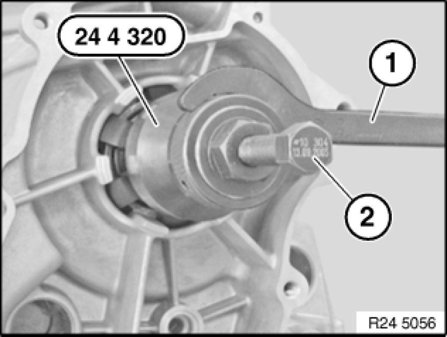
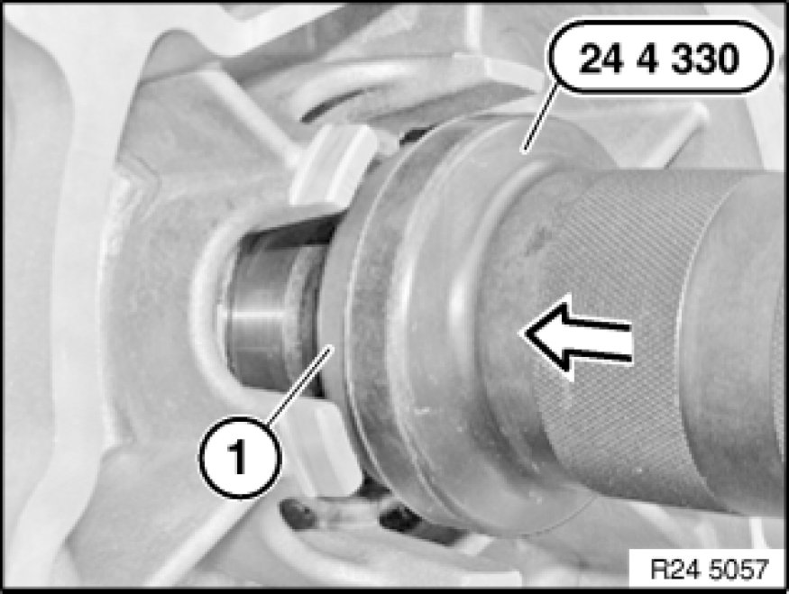

Replacing Output Flange Shaft Seal (GA6L45R) AWD
24 13 014 - Replacing output flange shaft seal (GA6L45R) AWD

Special tools required:
- 24 4 320
- 24 4 330

Important!
After completion of work, check transmission fluid level Procedures.
Use only the approved transmission fluid.
Failure to comply with this requirement will result in serious damage to the automatic transmission!

Necessary preliminary tasks:
- Remove rear underbody protection
- Remove exhaust system.
- Remove heat shields
- Support transmission Removing and Installing Automatic Transmission (GA6L45R)
- Remove transmission cross-member Replacing Cross-Member for Transmission Mounting.
- Remove transfer box Removing And Installing Transfer Case (ATC 400 X-Drive).

Mount special tool 24 4 320 and secure with hook wrench (1).
Screw in spindle (2) until radial shaft seal is released.

Installation Note:
Coat sealing lips of new radial seal with clean transmission oil.
Drive shaft seal firmly home with special tool 24 4 330.